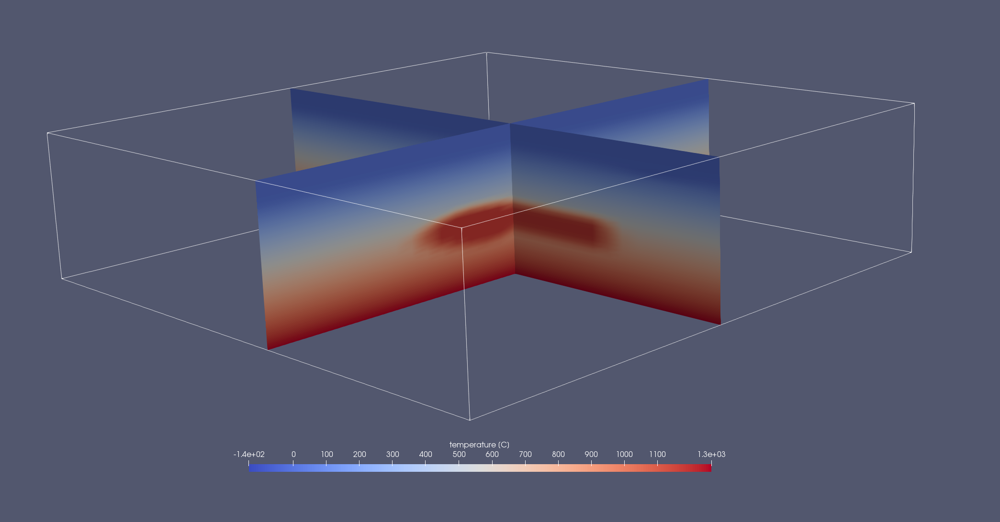

3.4 How to use a temperature input file
A temperature input file can be used to introduce a custom temperature field at the start of the simulation. The file can be created in Matlab as a 3D matrix for convenience. The matrix is expected to cover the entire model (not more and not less). The size of the matrix does not matter but if you want to assign a temperature to a certain body, it is recommended to fit the marker resolution.
Setting up the file with Matlab
%% Setup temperature
% get bounds of LaMEM box
x_box = opt.setup.coord_x;
y_box = opt.setup.coord_y;
z_box = opt.setup.coord_z;
% fit marker distribution
nx = length(opt.setup.marker_x);
ny = length(opt.setup.marker_y);
nz = length(opt.setup.marker_z);
% initialize matrix
T3D = zeros(nx,ny,nz);
% set up coordinate grid (for assigning specific temperatures based on coordinates)
dx = (x_box(2)-x_box(1))/nx;
dy = (y_box(2)-y_box(1))/ny;
dz = (z_box(2)-z_box(1))/nz;
x_vec = (x_box(1)+dx/2:dx:x_box(2)-dx/2);
y_vec = (y_box(1)+dy/2:dy:y_box(2)-dy/2);
z_vec = (z_box(1)+dz/2:dz:z_box(2)-dz/2);
% DO NOT USE MESHGRID HERE!
[X,Y,Z] = ndgrid(x_vec,y_vec,z_vec);
%% setup linear Temperature profile starting at the surface
z_surf = 3;
gradient = 30; % [K/km]
zeros(nz,1);
ind_surf = find(z_vec < z_surf);
T_vec = zeros(nz,1);
T_vec(ind_surf) = (z_surf - z_vec(ind_surf)) * gradient;
for i = 1 : nz
T3D(:,:,i) = T_vec(i);
end
%% assign Temperature to volume
vol = Volumes.Magma;
T_vol = 1180;
% run through all depths
for k = 1 : nz
depth = z_vec(k);
Slices = {};
% find slices at that depth
for s = 1 : length(vol.Polygons)
if vol.Polygons{s}(1,3) <= depth + dz/10 && vol.Polygons{s}(1,3) >= depth - dz/10
Slices = [Slices; vol.Polygons{s}];
end
end
% if slices of the body exist at that depth
if ~isempty(Slices)
allInds = false(nx,ny);
% add all markers that lie inside the body
for s = 1 : length(Slices)
inds = inpolygon(X(:,:,k),Y(:,:,k),Slices{s}(:,1),Slices{s}(:,2));
allInds = allInds | inds;
end
% assign the markers a temperature
T_Slice = squeeze(T3D(:,:,k));
T_Slice(allInds) = T_vol;
T3D(:,:,k) = T_Slice;
end
end
%% write binary to be read by LaMEM
%(Filename,[# of points in x-dir, # of points in y-dir, # of points in z-dir, Temp-Matrix in vector form])
petscBinaryWrite('T3D.dat',[nx;ny;nz;T3D(:)]);Loading file in LaMEM
In the LaMEM input file, set:
temp_file = ./T3D.datOptions init_temp and act_steady_temp need to be disabled
init_temp = 0
act_steady_temp = 0